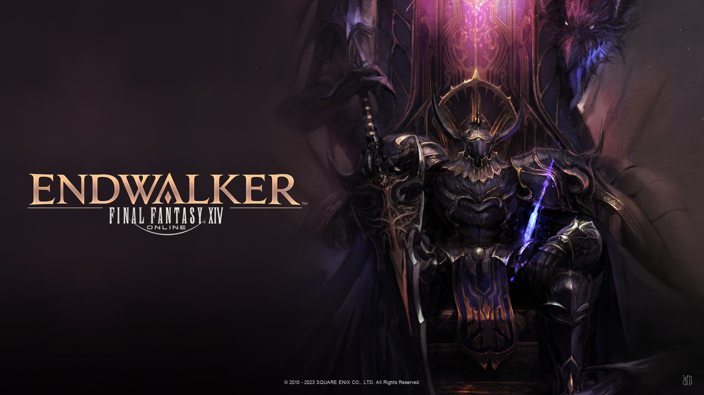
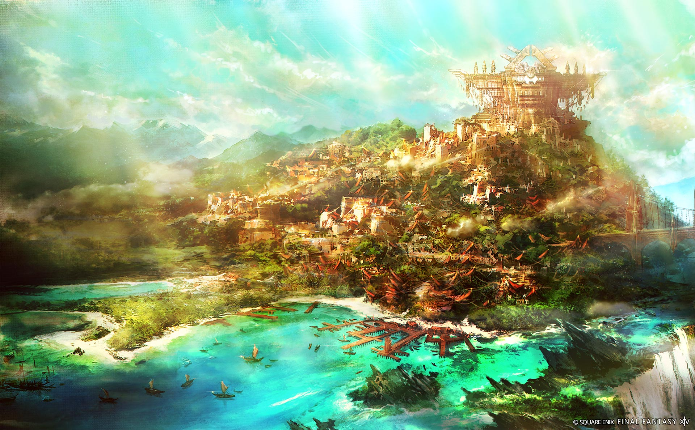
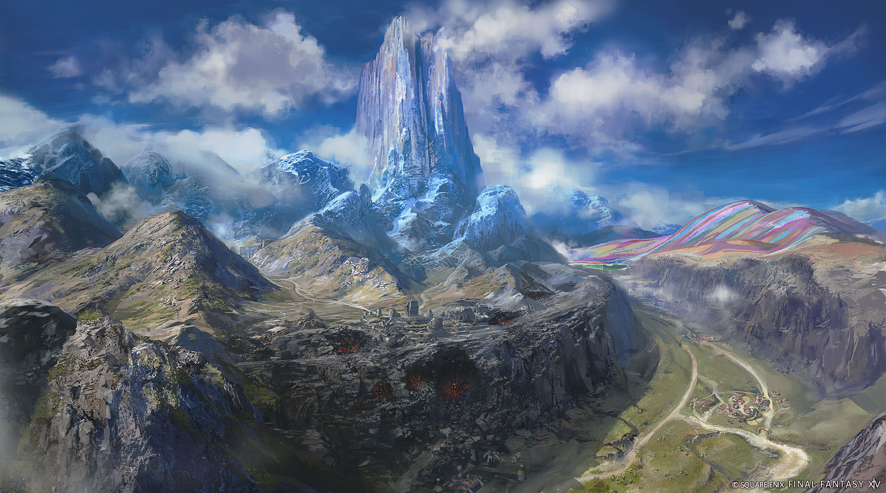

Actualité
Patch 6.5
Le patch 6.5 amène son lot de nouveauté, notamment avec la conclusion de l'arc de Golbez.
Il rajoute également différents contenu, améliorations de l'île jusqu'au lvl 13
Nous avons également de nouveaux donjons à embranchements, un nouveau défi iréel et quelques
ajustements au niveau de l'équilibrage des classes.
Dawntrail
C'est le 21/10/2023 en direct de Londres que le directeur de Final Fantasy XIV, Naoki Yoshida, a révélés une multitude de détails sur Dawntrail, la prochaine extension du MMORPG de Square Enix. Cette cinquième extension marque le début d'un nouveau cycle, 10 ans après la sortie de A Realm Reborn.
Dawntrail est prévue pour le début de l'été 2024, et proposera comme à l'accoutumée de nouveaux
jobs, des nouvelles zones à explorer et surtout une toute nouvelle histoire à travers le Nouveau
Monde.
La keynote s'est ouverte sur une version étendue, mais certainement non finale, de la bande annonce
de Dawntrail. Cette nouvelle version a permis de révéler en grandes pompes le nouveau job de corps à
corps : le Rôdeur Vipère
Tulliyolal est la nouvelle cité qui servira de point de départ et de hub à l'aventure, comme Kugane
ou Ishgard. La cité est située dans la partie nord du continent de Tural. Si les Mamool Ja y sont
très représentés, la route commerciale avec la Vieille Sharlayan a transformé la cité en melting
pot!
Quelques fan sites sur final fantasy
Vous trouverez ci dessous quelques liens vers des fan sites traitant de l'univers de Final Fantasy, nous n'avons pas trouvé de fan site dédiée à FF14, nous avons donc pris des sites plus généralistes !